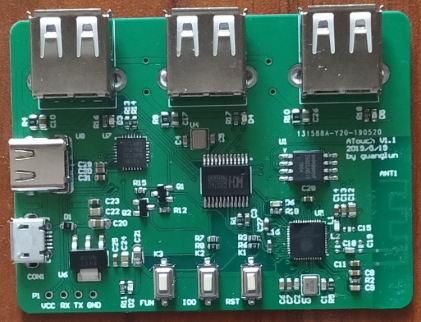

吃鸡开发板 ATouch说明
开发板简介
说起这个项目的起源，可能大概也许是源于自己用手搓手机菜的抠脚吧，也或许是因为对开发的热情大过于玩的热情哈哈，反正这个东西反反复复得折腾了半年之久了，对这个东西的定位也渐渐从做一个人人都能玩的商品到单纯做一个有吃鸡功能的开发板。现在把他开源出来，也算是回报互联网上良多开源的资料教程吧！
吃鸡开发板目前使用ESP32+CH374U方案，为实现通过键鼠操作Android手机（模拟触屏），通过USB线与Android连接，使用ADB协议进行通讯控制。
教程列表
- 使用说明
- 实现原理说明
源码和资料
代码托管 github
ATouch安卓APP源码：
https://github.com/guanglun/ATouch
【开发环境：AndroidStudio】
ATouch板子源码：
https://github.com/guanglun/ESP32_CH374U
【开发环境：Linux SDK:ESP-DIF3.2】
ATouch安卓后台程序源码：
https://github.com/guanglun/ATouchService
【开发环境：android-ndk-r13b】
APP下载地址：
https://github.com/guanglun/ATouch/blob/master/app/release/ATouchV1.0.apk
代码托管 gitee
ATouch安卓APP源码：
https://gitee.com/guanglunking/ATouch
【开发环境：AndroidStudio】
ATouch板子源码：
https://gitee.com/guanglunking/ESP32_CH374U
【开发环境：Linux SDK:ESP-DIF3.2】
ATouch安卓后台程序源码：
https://gitee.com/guanglunking/ATouchService
【开发环境：android-ndk-r13b】
APP下载地址：
https://gitee.com/guanglunking/ATouch/blob/master/app/release/ATouchV1.0.apk
淘宝店铺：
https://item.taobao.com/item.htm?id=595635571591
演示视频：
https://www.bilibili.com/video/av53687214
-
键鼠操作
-
ATouch通过wifi连接手机 手机typec转HDMI投屏
图片：
